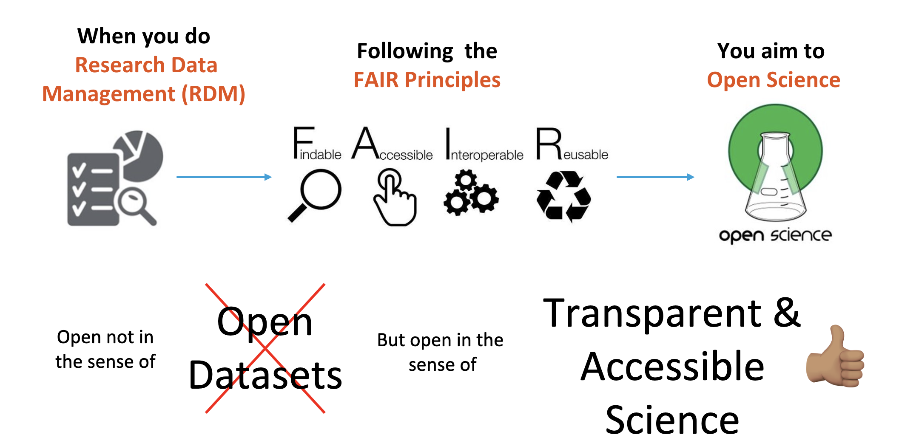
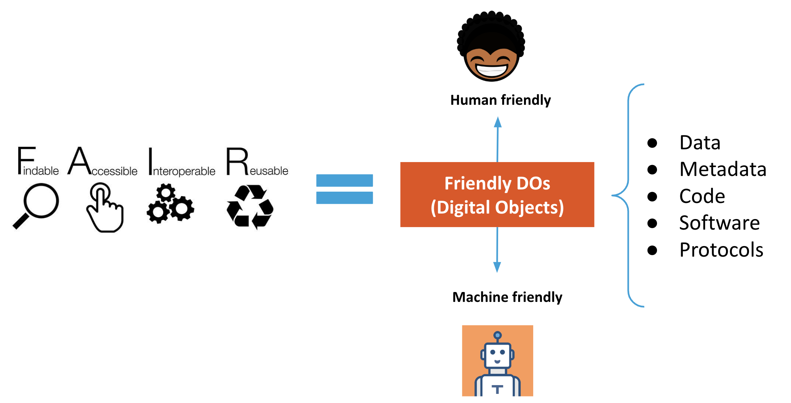

All in One View
Content from Introduction
Last updated on 2026-09-04 | Edit this page
Estimated time: 15 minutes
Overview
Questions
- Does FAIR data mean open data?
- What are Digital Objects and Persistent Identifiers?
- Different types of PIDs
Objectives
- Understand that the FAIR principles are fundamental for Sustainable Science
- Know what human and machine-friendly digital objects are
1. Does FAIR data mean open data?
No.
FAIR means human and machine-friendly data sources which aim for
transparency in science and future reuse.

What does it mean to be machine-readable vs human-readable?
Human Readable: “Data in a format that can be
conveniently read by a human. Some human-readable formats, such as PDF,
are not machine-readable as they are not structured data, i.e., the
representation of the data on disk does not represent the actual
relationships present in the data.”
Machine Readable: “Data in a data format that can be
automatically read and processed by a computer, such as CSV, JSON, XML,
etc. Machine-readable data must be structured data. Compare
human-readable. Non-digital material (for example, printed or
hand-written documents) is not machine-readable by its non-digital
nature. But even digital material need not be machine-readable. For
example, consider a PDF document containing tables of data. These are
definitely digital but are not machine-readable because a computer would
struggle to access the tabular information - even though they are very
human-readable. The equivalent tables in a format such as a spreadsheet
would be machine-readable. As another example, scans (photographs) of
text are not machine-readable (but are human-readable!) but the
equivalent text in a format such as a simple ASCII text file can be
machine-readable and processable.”

Machine friendly = Machine-readable + Machine-actionable + Machine-interoperable
During this sourcebook, we will be using “Machine-readable” and “Machine friendly” interchangeably. We like the term “friendly” since it can also include “machine-actionability” and “machine-interoperability.”
2. What are Digital Objects and Persistent Identifiers?
A Digital Object is a bit sequence located in a digital memory or storage that has, on its own, informational value. For example:
- A Scientific Publication
- A Dataset
- A Rich Metadata file
- A README file containing Terms of use & Access Protocols

To learn more about FAIR Digital Objects
FAIR Digital Objects: Which Services Are Required? (Schwardmann, Ulrich 2020) FAIR Digital Object Framework Documentation (BdSS, Luiz Olavo 2020)
A Persistent Identifier (PID) is a long-lasting reference to a (digital or physical) resource:
- Designed to provide access to information about a resource even if the resource it describes has moved location on the web
- Requires technical, governance, and community support to provide the persistence
- There are many different PIDs available for many different types of scholarly resources, e.g., articles, data, samples, authors, grants, projects, conference papers, and so much more
Video: The FREYA project explains the significance of PID: LINK
Different types of PIDs
PIDs have community support, organizational commitment, and technical infrastructure to ensure the persistence of identifiers. They are often created to respond to a community’s needs. For instance, the International Standard Book Number or ISBN was created to assign unique numbers to books, is used by book publishers, and is managed by the International ISBN Agency. Another type of PID, the Open Researcher and Contributor ID or ORCID (iD), was created to help with author disambiguation by providing unique identifiers for authors. The ODIN Project identifies additional PIDs along with Wikipedia’s page on PIDs.
In Episode 6 (Data Archiving), you will explore one type of PID, the DOI (Digital Object Identifier), which is usually the standard PID for Datasets and Publications.
Exercise - Level Easy
- arXiv is a preprint repository for physics, math, computer science, and related disciplines.
- It allows researchers to share and access their work before it is formally published.
- Visit the arXiv new papers page for Machine Learning.
- Choose any paper by clicking on the ‘pdf’ link. Now use control + F or command + F and search for ‘HTTP’. Did the author use DOIs for their data?
Solution
Authors will often link to platforms such as GitHub where they have shared their software, and/or they will link to their website hosting the data used in the paper. The danger is that platforms like GitHub and personal websites are not permanent. Instead, authors can use repositories to deposit and preserve their data and software while minting a DOI. Links to software sharing platforms or personal websites might move, but DOIs will always resolve to information about the software and/or data. See DataCite’s Best Practices for a Tombstone Page.
How does your discipline share data?
Does your discipline have a data journal? Or some other mechanism to share data? For example, the American Astronomical Society (AAS), via the publisher IOP Physics, offers a supplement series as a way for astronomers to publish data.
- FAIR means human and machine-friendly data sources which aim for transparency in science and future reuse.
- DOI (Digital Object Identifier) is a type of PID (Persistent Identifier)